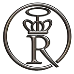

Le Sacro Império de Reunião est une micronation fondée le 28 août 1997 par des étudiants brésiliens. Nous fêtons aujourd'hui les 20 ans de cette initiative presque aussi vieille que reunionweb.org. J'aurais pû en parler à l'époque si j'avais un peu visité les sites dans la langue de Camões. Cette micronation est Toujours active et florissante après 20 ans, elle est sans doute plus connue que reunionweb dans le monde lusophone. Mais peut-être pas dans le monde francophone.
{% Image page, "reuniao-armoiries.png", "Armoiries de Sacro Império de Reunião: écartelé au 1 et 4 d'or à trois rangs de quatre cinq et quatre boules d'azur au 2 et 3 d'azure aux fleurs de lys d'or sur le tout écu de gueule au R d'argent surmonté d'une couronne du même ; supporté de deux chevaliers d'azure armés capés et lampassés d'argent portant bannière de gueule au cercle d'argent au R de sable couronné du même. La terrasse est en bois. La devise: FIAT JUSTICIA PEREAT MUNDUS"%}
 L'Empire Sacré de Réunion (c'est ce que Sacro Império de Reunião signifie en portugais) est donc une micronation, une sorte de modèle de pays fondée le 28 août 1997 par des étudiants de l'Université pontificale catholique de Rio de Janeiro, en tant que simulation politique et constitutionnelle.
Une micronation est une entité qui se déclare indépendante et souveraine, mais qui n'est généralement pas reconnue par les gouvernements ou les organisations internationales. Ces entités peuvent être créées pour diverses raisons, allant du simple divertissement à des motivations politiques, sociales, culturelles, fiscale ou même économique. Par exemple Hut River Kingdom en Australie a été fondée en 1970 par un fermier qui contestait les quotas de blé imposés par le gouvernement australien. Les micronations peuvent avoir leurs propres lois, monnaies, drapeaux, et même des passeports, mais ces objets ne sont pas reconnus officiellement sur la scène internationale.
Certaines micronations comme l'Empire Sacré de Réunion sont purement virtuelles, existant principalement en ligne, tandis que d'autres revendiquent des territoires physiques, souvent de petite taille. En Europe on peut citer la principauté de Sealand, une plateforme pétrolière abandonnée en mer du Nord, qui a été revendiquée comme territoire indépendant en 1967 ou plus récement le Liberland, fondée en 2015, revendiquant un territoire contesté entre la Croatie et la Serbie. Les micronations sont fondées par des individus seuls ou des communautés qui cherchent à expérimenter des formes alternatives de gouvernance ou à exprimer des idéaux politiques spécifiques.
Les micronations sont souvent perçues comme des projets excentriques ou utopiques, mais elles peuvent également servir de laboratoires pour explorer des idées sur la souveraineté, la citoyenneté et la gouvernance. C'est d'ailleurs ce qui motive les sujets de l'empire de Réunion qui s'est très vite affirmé comme une des plus grandes communautés si ce n'est la plus grande dans le monde lusophone.
Selon Micropedia, l'encyclopédie des micronations, Bernardo Bauer et Cláudio André ont créé en décembre 1996, l'Empire du Pays! (O País!) après que ce dernier a été rejeté par le ministère de l'Immigration de Porto Claro. Toutes les nomenclatures du pays ont suivi un paradigme simple et répétitif : la capitale s'appelait La capitale ! ; le gouvernement s'est référé au gouvernement !, etc. Castro a abandonné le projet en août 1997, après que Pedro Aguiar lui a suggéré la création d'un autre pays qui ressemble aux caractéristiques d'une micronation : l'Empire Sacré de Réunion.
Cláudio André de Castro est donc devenu Imperador Cláudio I, premier empereur de l'Empire Sacré de Réunion dont le titre complet est :
Sua Sacra Majestade Imperial, Cláudio Primeiro, pela Graça de Deus e Aclamação do Povo, Sacro Imperador de Reunião, Grão-Duque de Le Port, Stráussia, Fournaise, Conservatória e Dabliu, Conde de Amapá, Eterno Defensor da Fé, Chefe da Casa Imperial de Castro-Bourbon.
ce qui signifie
Sa Sacrée Majesté Impériale, Cláudio Premier, par la Grâce de Dieu et l'Acclamation du Peuple, Sacré Empereur de la Réunion, Grand-Duc de Le Port, Stráussia, Fournaise, Conservatória et Dabliu, Comte d'Amapá, Éternel Défenseur de la Foi, Chef de la Maison Impériale de Castro-Bourbon.
À son mariage en 2009, l'épouse de Cláudio est devenue l'impératrice Roberta et le photographe du mariage a publié la photo officielle du couple Impérial.
{% Image page, "Foto-oficial-do-casamento-imperial.jpg", "Photo d'un couple de jeunes mariés dans un cadre, une jeune femme blonde et un jeune homme aux cheveux noirs." %}
Photo officielle du mariage du couple impérial. (source : Flickr)
La micronation revendique comme territoire de référence l'île de La Réunion et en propose même un redécoupage administratif sans n'avoir consulté aucun des habitants du département français d'Outre-mer. En fait, l'empire n'a pas de souveraineté effective sur ce territoire et comme les autres micronations, n'a jamais été reconnu par aucun autre état souverain. C'est ce qu'on appelle une micronation modéliste, c'est-à-dire une micronation qui se concentre principalement sur la création et la gestion de modèles de structures politiques, sociales et économiques. Contrairement aux micronations qui revendiquent des territoires physiques ou qui ont des aspirations de reconnaissance internationale, les micronations modélistes se concentrent davantage sur l'aspect ludique, éducatif ou expérimental de la création d'une nation.
L'île Bourbon est donc découpée en capitaineries dont une s'appelle Fournaise et un district fédéral (suivant sans doute le modèle brésilien), placé en plein centre de l'île sur un versant du Piton des neiges et qui porte le nom de Beatriz. D'autres noms sur la carte éditée par la société impériale de géographie sont importés comme Lindt, Arthuropolís, Strüss ou Nová Canada, d'autres sont des traductions libres de lieux existant vraiment comme São Paulo, Santo André, Estrala Matutina ou même Whitewoods à l'emplacement de Bois-blanc.
{% Image page, "carta99-imperio-renuniao.jpg", "Carte de la Réunion découpé en 5 zones et 52 districts aux noms multilingues" %}
La dernière carte de la Reunião doit sembler plutôt exotique pour les vrais habitants de la Réunion.
Les capitaineries ont chacune leur site web présentant la région dans un même mélange de réalités océaniques et d'imagination brésiliennes. Vous pouvez ainsi visiter les capitaineries ou de Fournaise qu'on n'a pas besoin de placer sur l'île ou celle de Conservatoria au sud de l'île. Notons qu'à l'époque, les communes du Port ou de Saint-Pierre n'avaient pas encore leur site web.
L'empire virtuel a aussi des visées expansionnistes virtuelles et s'est vu adjoindre deux vice-royaumes, Celui de Mariana sur l'île de Madagascar, et Celui de Mauritius sur l'île Maurice.
Sur l'île de la Réunion (la vraie), cette nouvelle de prise de contrôle impérial a plutôt été bien reçue. Le Quotidien de l'île en a fait sa une le 8 octobre 1998 et si je ne vous en ai pas parlé à l'époque c'est que ce journal n'était pas sur le web. Les Réunionnais on dû bien rire de cette blague de potaches avant de l'oublier.
{% Image page, "LeQuotidien-8octobre1998.png", "Une du Quotidien de la Réunion: LA REUNION CHANGE DE STATUT" %}
Comme beaucoup de micronations, l'empire frappe ses propres pièces de monnaie, imprime des passeports et des billets de banque, et produit des drapeaux et des étendards pour ses citoyens depuis l'an 2000. Selon ses fondateurs, l'objectif principal de la micronation est de promouvoir une profonde interaction politique entre ses participants, dans un but éducatif et ludique. Les anciens étudiants de l'Université brésilienne se réunissent parfois avec les citoyens de l'empire où ils peuvent rencontrer le couple impérial dans un moment plus décontracté.
{% Image page, "mesa-completa-muita-felicidade.jpg", "Grande tablée complète avec des drapeaux rouges R sur la table et beaucoup de jeunes hommes autour de la table." %}
L'impératrice est à gauche et l'empereur se cache au fond tout au bout de la table. (source : Flickr)
Les créateurs de la micronation étaient des étudiants de l'Université pontificale catholique de Rio de Janeiro, et, jusqu'aujourd'hui, la majorité de ses "citoyens" sont Brésiliens et Portugais. La langue officielle de l'empire était à l'origine l'anglais, sans doute par la volonté des créateurs d'origine de s'adresser à un public le plus large possible. Mais en 1998, pour répondre à la demande des citoyens l'empire est devenu bilingue (anglais et portugais). J'ai connu des démocraties qui étaient moins à l'écoute de ses citoyens que cet monarchie absolue…
En 2006, le "gouvernement" de la micronation impériale a aidé à organiser l'Équipe Intermicronationale, un groupement sur le site de microprèts Kiva qui aide les personnes dans le besoin à financer leur activité.
Aujourd'hui l'Empire Sacré de Réunion reste très active même si l'activité des listes de discussions tend à faiblir. Le groupe facebook continue à faire état de rencontres et de la communauté et les références de journalistes relatant le phénomène des micronations. Le wiki législatif de l'empire, organe publiant les délibérations et les décrets impériaux est toujours en ligne, mais il semble qu'il n'est plus mis à jour puisque les documents les plus récents datent de 2015.
Si l'activité et la couverture médiatique tendent à faiblir ces dernières années la Reunião reste une des micronations modéliste les plus connues de l'histoire. Rien que pour cela, elle mérite d'être citée sur reunionweb même si c'est 20 ans après sa création.
Pour ceux qui sont tombés sur cette page en cherchant du contenu sur l'île de la Réuion en portugais, je vous propose de lire les quelques pages sur le sujetqu'Atout France, l'agence touristique de la France, a mise en ligne pour le monde lusophone. On y parle de baleines, de volcan et de vanille.
{kind=link}